概率统计
【概率论】
概率论是数学的一个分支，它是研究随机现象中有关事件规律性的学科，概率论是在17 世纪产生的，近几十年来随着科学技术的迅速发展，在工农业生产、近代物理、地球物理、自动控制与通信理论、生物学和医学等方面都起重要作用.
【随机现象】
在一定的条件下可能出现这样的结果，也可能出现那样的结果，而且不能预先断言出现哪种结果的现象叫随机现象.例如在桌面上投一枚硬币，可能正面向上，也可能反面向上，而且在投掷之前不能预先断言哪一面向上；一门炮对一目标射击，尽管经过瞄准，炮弹却可能落在目标附近的各个位置.
【随机事件】
随机现象中的事件在条件实现时可能发生也可能不发生，称这个事件为在这个条件下的随机事件.例如“正面向上” 是“往桌面上投一枚硬币” 这个条件下的随机事件；“命中目标” 是“大炮瞄准目标射击” 这个条件下的随机事件.
【必然事件】
在一定的条件下必然要发生的事件，叫做必然事件.例如 “水沸腾” 是在条件—— “纯水，一个大气压，100℃” 下的必然事件.
【不可能事件】
在一定的条件下不可能发生的事件，叫做不可能事件.例如“水结冰” 是在条件——纯水，一个大气压、100℃” 下的不可能事件.
【试验】
观察一定条件下发生的现象，通常叫做试验.条件实现一次就是一次试验，一个试验如果可以在相同的条件下重复进行，而且每次试验的结果可以不同，有偶然性，我们就称它为随机试验，为简单起见，也简称试验.
【频率】
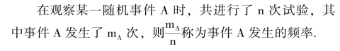
【概率】
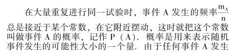
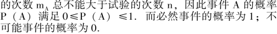
【等可能性事件的概率】
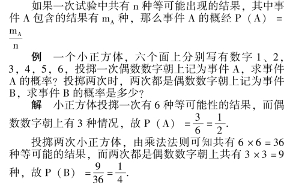
例 将n 个不同的球任意放到m (m≥n) 个盒子中，每个盒子容纳球的个数不限.试求①指定的n 个盒子中各放有一个球的概率P1；②有n 个盒子各放有一个球的概率P2.
解 ①因为每一个球放入盒子中时都有m 种方法，故由乘法原理可知，n 个球全部放入盒子中时共有mn 种放法，由于放法的任意性，这mn 种放法都是等可能的.
指定的n 个盒子中各放有一球，这种放法就是将n 个球在n 个指定的盒中的排列，有n! 种，所以
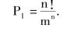
②有n 个盒子各放有一球，这种放法可按下述步骤来完成: 先选出n 个盒子(有
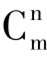
种方法)，然后将n 个球分别放入n 个盒子中，每盒一球(有n! 种方).所以，有n 个盒子各放有一球的放法有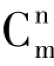
n! 种，从而得到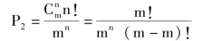
说明: 等可能性事件概率的求法，基本上可用排列组合的有关知识解决，因此这部分内容是排列组合知识的直接应用.
【互斥事件】
在同一次试验中，不可能同时发生的两个事件叫做互斥事件，也叫做互不相容事件.如果事件A1，A2，…，An 中任何两个都是互斥事件，那么就说事件A1，A2，…、An 彼此互斥.例如: 从52 张扑克牌中抽出一张牌，设事件A 代表抽到一张红桃，事件B 代表抽到一张黑桃，事件C 代表抽到一张红方块，事件D 代表抽到一张梅花，则事件A，B，C，D 彼此互斥.
【互斥事件有一个发生的概率】
如果事件A，B 互斥，那么事件“A ＋B” 发生(既A、B 中有一个发生) 的概率，等于事件A，B 分别发生的概率的和，即P (A ＋B) ＝P (A) ＋P (B).如果事件A1，A2，…，An彼此互斥，那么事件“a1＋a2＋… ＋An” 发生(即A1、A2、…、An中有一个发生) 的概率，等于这n 个事件分别发生的概率的和，即P (A1＋A2＋…＋An) ＝P (A1) ＋P (A2) ＋…P (An).
说明: 上述内容中涉及到“和事件” 的概念，在一般情况下，设A 与B 是同一试验下的两个随机事件，则“A 或B 有一个发生” 的事件记作“A ＋B” 事件，即只要事件A，B 中有一个发生，都表示事件“A ＋B” 发生.
例 某电话总机一分钟内: 呼叫次数为0 至5 次的事件A 概率为0.12，呼叫次数为6 至10 次的事件B 的概率是0.32，呼叫次数为11 至15 次的事件C 的概率是0.35，呼叫次数为16 至20 次的事件D 的概率为0.13，试计算每分钟呼叫的次数在0 至20 次的事件E 的概率.
解 显然事件A，B，C，D 是彼此互斥的，所以
P (E) ＝P (A ＋B ＋C ＋D) ＝P (A) ＋P (B) ＋P (C) ＋P (D)
＝0.12 ＋0.32 ＋0.35 ＋0.13 ＝0.92.
【对立事件】
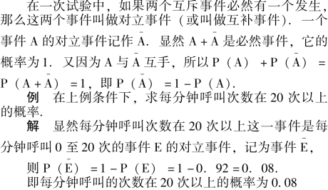
【相互独立事件】
两个相互独立的事件首先是对两个不同的试验来说的，如果第一个试验中事件A 是否发生，对第二个试验中事件B 发生的概率没有影响，反之，第二个试验中事件B 是否发生，对第一个试验中事件A 发生的概率也没有影响，就说事件A 和B 是相互独立事件.
说明: 学习相互独立事件概念时，要注意与两个互斥事件概念区别开来，前者是指两个试验中，两个事件发生的概率互不影响，后者是指一次试验中，两个事件不会同时发生.
【相互独立事件同时发生的概率】
两个相互独立的事件A，B 同时发生记为事件A·B，则事件A·B 的概率等于事件A、B 概率的积，即P (A·B) ＝P (A) ·P (B).
一般地，如果事件A1，A2，…，An 相互独立，那么这n 个事件同时发生的概率，等于每个事件发生的概率的积，即P (A1·A2……An) ＝P (A1) ·P (A2) ……P(An).
例 对同一目标进行三次射击，第一、二、三次射击的命中概率分别是0.4、0.5、0.7，试求①三次射击都命中的概率；②三次射击恰有两次命中的概率.
解 ①设“第一次射击，击中目标” 为事件A，“第二次射击，击中目标” 为事件B，“第三次射击，击中目标” 为事件C，三次射击都击中目标就是事件A·B·C.
由题意可知三次射击互不相响，即事件A、B、C 互相独立，所以
P (A·B·C) ＝P (A) ·P (B) ·P (C)
＝0.4 ×0.5 ×0.7 ＝0.14.
即三次射击都命中的概率是0.14.
②“三次射击恰有两次命中” (用A 表示) 包括三种情况: 第一次命中(用A1 表示)，第二次命中(用A2 表示)，第三次未命中(用A3 表示)；第一、三次命中，第二次未命中；第二、三次命中，第一次未向中，所以A ＝A1A2A3－＋A1A2－A3＋A1－A2A2，
由于三次射击是独立的，因此
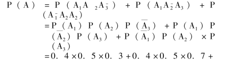
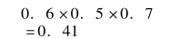
即三次射击恰有两次命中的概率是0.41.
【独立重复试验】
将只有两种可能性的试验(也叫贝努里试验) 独立地重复n 次的随机试验，叫独立重复试验，也叫做n 次重贝努里试验.这种试验有两个特点:
①试验的内容是重复n 次某一种试验，每次试验有两个可能的结果:
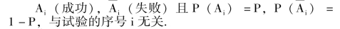
②n 次试验是独立进行的，即每次试验结果出现的概率不受其它各次试验结果的影响.
在n 重贝努里试验中，事件Bk——在n 次试验中恰好有K 次成功——的概率
P (Bk) ＝CknPk(1 －P)n－k，(K ＝0、1、…、n).
说明: 独立重复试验是同一试验的n 次重复，如同一门炮独立地射击4 次；不过也可以应用到n 次不同的独立试验，只要每次试验中“成功” 的概率相同，如4 门炮独立地向目标各射击一次，如果每门炮命中的概率相同，也可以看作是4 重贝努里试验.
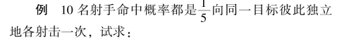
①10 人中全没命中目标的概率；
②恰有一人命中目标的概率；
③至少有两人命中目标的概率.
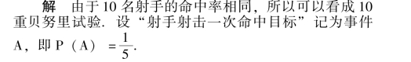
①设“10 人中全没命中目标” 记为事件B，
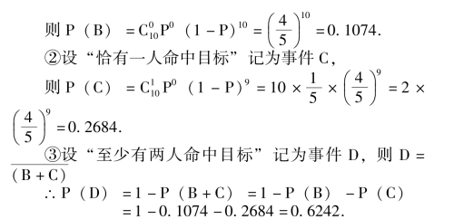
例 设有两架高射炮，每一架击中飞机的概率都是0.6，试求同时射击一发炮弹而命中飞机的概率是多少?又若一架敌机侵犯，要以99%的概率击中它，问需要多少架高射炮?
解 两架高射炮同时射击一发炮弹而命中飞机，包括两种情况: 两发炮弹恰有一发命中或两发炮弹都命中.
∴P (命中飞机) ＝C12p (1 －p) ＋C22P2
＝2 ×0.6 ×0.4 ＋0.62 ＝0.84，
即两架高射炮同时发射一发炮弹，命中飞机的概率是0.84.
也可用两发炮弹至少有一发命中的对立事件(即两发炮弹均未命中) 来处理，即
P (命中飞机) ＝1 －P (未命中飞机)
＝1 －C02P0(1 －p)2
＝1 －0.42 ＝0.84.
设需有n 架高射炮，同时发射一发炮弹命中飞机的概率为99%，则
P (命中飞机) ＝1 －P (均未命中飞机)
＝1 －C0np0(1 －p)n＝1 －0.4n
即1 －0.4n＝0.99， ∴0.4n＝0.01
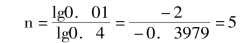
所以要以99%的概率击落敌机，需要5 架高射炮.
【总体】
要考察的对象全体叫做总体.说明: 总体是一个集合的概念.
【个体】
总体中每一个对象叫做个体.
说明: 个体是总体(集合) 中的元素.
【样本】
从总体中抽取的一部分个体叫做总体的样本.
说明: 样本是集合的概念.它和总体的关系是样本是总体的真子集，有样本⊂总体的关系.
【样本的容量】
样本中个体的数目叫做样本的容量.
【平均数】
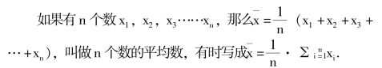
说明: 这里所说的平均数也叫算术平均数.
【总体平均数】
总体中所有个体的平均数叫做总体平均数.
【样本平均数】
样本中的所有个体的平均数叫做样本平均数.
【公式x＝x′＋a】
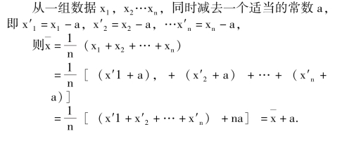
【加权平均数】
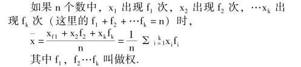
【样本方差】
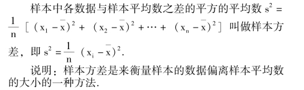
【总体方差】
当样本容量很大时，样本方差很接近反映总体波动大小的特征数，叫总体方差.
【样本标准差】
样本方差的算术平方根。
【样本方差计算公式】
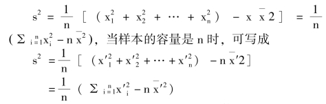
说明: 样本方差的计算，为解决总体方差的估计，公式的变形，是为了计算的简化.
【频数】
对统计数据进行分组处理，对属于每个小组内的数据进行累计，在各个小组内的数据的个数叫做每一小组的频数.
【频率】
每一小组的频数与样本容量的比值叫做这一小组的频率.
【频率分布直方图】
用样本分组界值做为横坐标，以频率与组距的比值做为纵坐标，做出的统计图表，并以邻界的样本与其频率与组距的比值做成长方形.
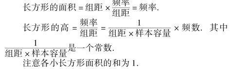
【累积频率】
数据小于某一数值的频率叫做该数值的累积频率.
根据算出的累积频率可以绘出累积频率分布图.它的横轴表示样本.纵轴表示累积频率，它的图形是一条折线.